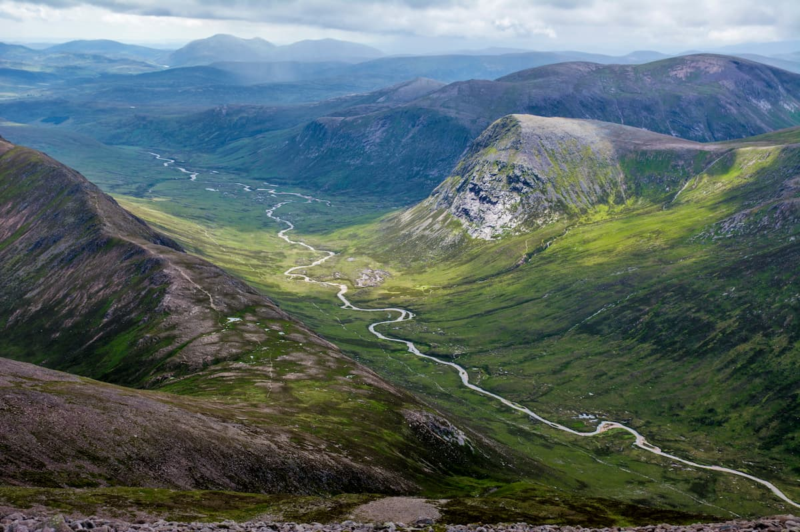

Attractions
Scotland is full of breathtaking scenery and historic landmarks:
Edinburgh Castle
Standing proudly on Castle Rock, Edinburgh Castle is Scotland’s most visited attraction. It has been a royal residence, military stronghold, and symbol of the nation for over a thousand years. Visitors can explore the Crown Jewels, the Stone of Destiny, and enjoy sweeping views of the city below.
Loch Ness
Located in the Scottish Highlands, Loch Ness is famous for its mysterious monster, “Nessie.” Stretching over 36 km, the loch is surrounded by beautiful hills and historic sites like Urquhart Castle. Boat tours are popular, giving visitors a chance to enjoy the scenery — and maybe catch a glimpse of the legend.

The Isle of Skye
Known for its dramatic landscapes, the Isle of Skye is a dream destination for nature lovers. From the jagged Cuillin mountains to the surreal rock formations of the Old Man of Storr, Skye offers some of the best hiking in Scotland. The island is also rich in folklore, castles, and cozy fishing villages.

Stirling Castle
Once the residence of Scotland’s kings and queens, Stirling Castle played a key role in the nation’s history, especially during the Wars of Independence. The castle’s impressive Renaissance architecture, royal chambers, and interactive exhibitions bring Scotland’s past vividly to life.

Cairngorms National Park
Covering a huge area of the Highlands, the Cairngorms is the UK’s largest national park. It’s a haven for outdoor activities like hiking, skiing, and mountain biking. Visitors can also discover rare wildlife, including red squirrels and reindeer, or visit charming Highland villages within the park.
